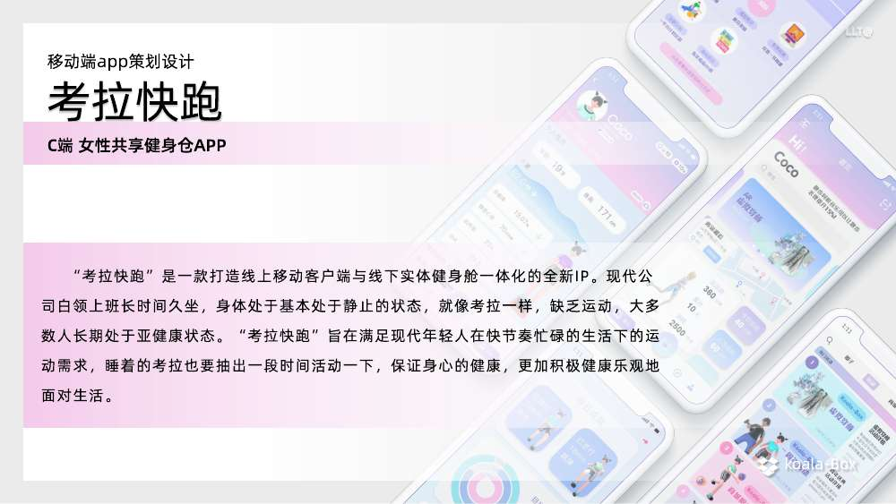
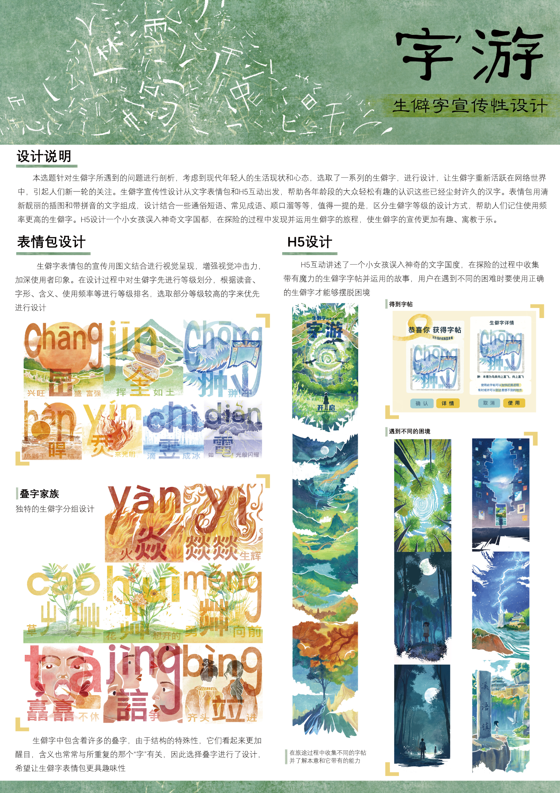
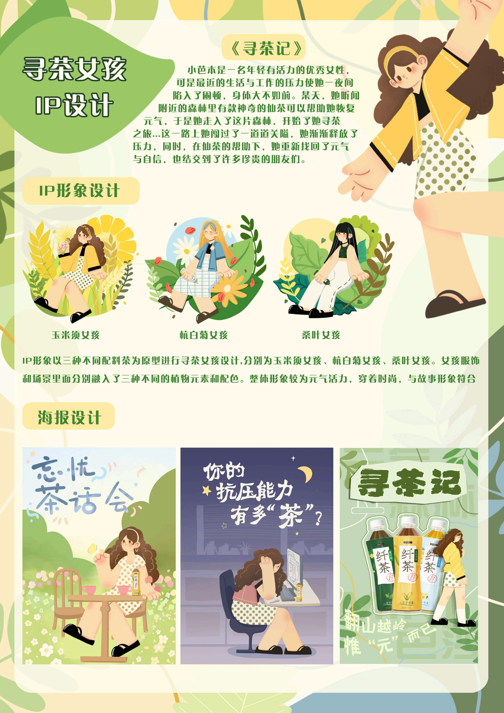

产品逻辑与App 核心流程
负责产品定位与功能架构，并重点完成预约、入场、运动记录等核心流程及 App UX/UI、交互原型设计。
- 已确认
- 个人职责、获奖证书存在、现有封面与界面概览
- 待补
- 信息架构、完整关键流程、可点击原型、方案 PDF、功能视频
SELECTED WORK / SUPPORTING EVIDENCE

负责产品定位与功能架构，并重点完成预约、入场、运动记录等核心流程及 App UX/UI、交互原型设计。

参与中医药资料研究与游戏定位，重点负责剧情、任务、关卡流程，游戏 UI 与交互，以及角色、场景、模型或动画制作；共同完成可玩原型、测试、演示与参赛材料。

围绕生僻字的表情包、字族视觉与 H5 互动叙事展开毕业设计：以插画、谐音和情境化故事降低理解门槛，让生僻字从知识内容变成可探索、可记忆的视觉体验。

负责用户洞察与故事概念、品牌视觉、包装及产品应用，并完成文案、方案整合与汇报材料。